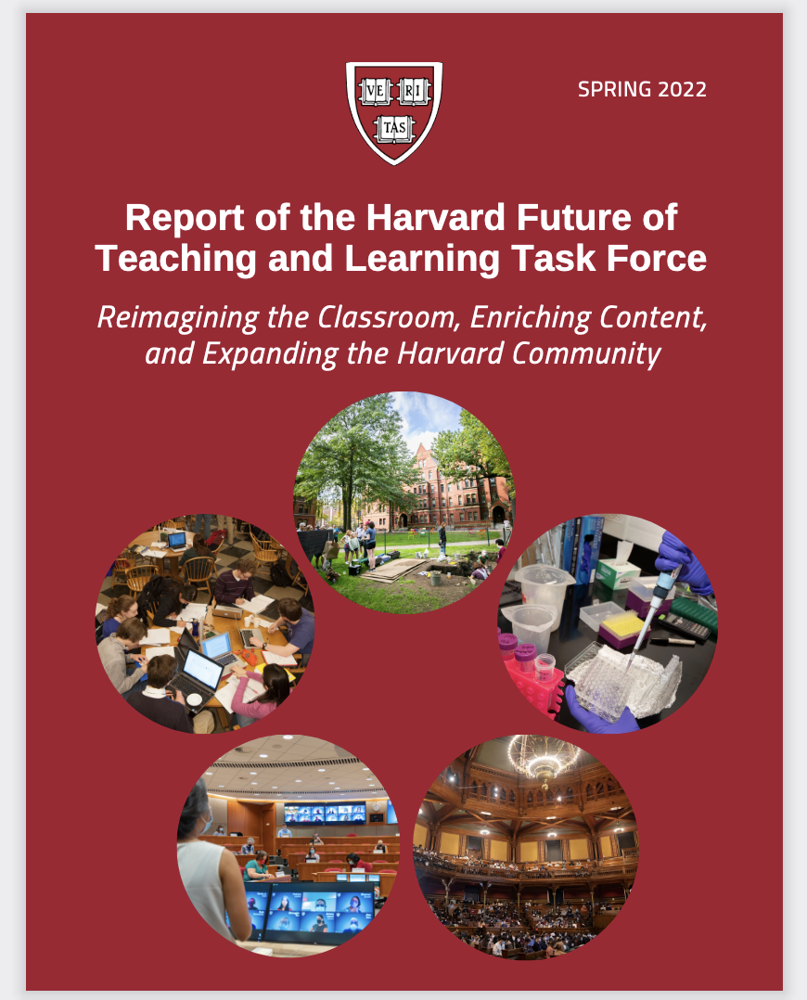
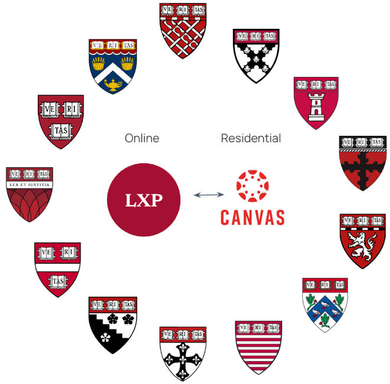

MIT and Harvard announce the launch of edX
Our 10+ years of experience in developing online learning experiences for edX have taught us innumerable lessons from which we are drawing upon to inform and inspire the design and implementation of the LXP.
 EdX May 2, 2012
EdX May 2, 2012
Harvard Business School Launches First Online Offering
Harvard Business School Online (formerly known as HBX) paved the way for developing a platform with a pedagogical opinion. In HBSO's case, that opinion was on how to teach HBS' case method asynchronously and at scale. The LXP will continue to develp that idea of platform as pedagogy to empower educators to build the next-generation of deeply engaging learning experiences.
 HBSO March 21, 2014
HBSO March 21, 2014
Reskilling and Employability Task Force
The Reskilling and Employability Task Force was created at the request of President Bacow to examine Harvard's strategy with respect to reskilling and employability. The report delivered to President Bacow included an analysis of the importance of investing in various modes of online learning to support reskilling and employability.
PK-12 Task Force
The PK-12 Task Force was created at the request of President Bacow to examine Harvard's strategy with respect to PK-12 education. Again, online education and opportunities to increase access and impact via partnerships that support online channels were a component of the report delivered to President Bacow.
HUIT-VPAL Platform Review Committee
Subject matter experts from HUIT and VPAL, with input from others such as DCE, engaged in a landscape review of Harvard's online learning ecosystem. The goal was to gain a full picture of the different platform investments and plans across Harvard.
September 1, 2019 - March 31, 2020
LXP Envisioning Discovery Period
The Office of the Vice Provost for Advances in Learning (VPAL) engaged Extension Engine, the primary vendor responsbile for the development of the original Harvard Business School Online platform, to help translate Harvard's vision for a potential next-generation learning experience platform into the feature level components of content authoring and delivery platform. The goal of this phase was to concretize the high-level designs and features that embody the unique value that the LXP vision represents. This phase was critical in allowing the LXP team to articulate the LXP in sufficient detail to be able to bring the vision to other Harvard stakeholders in the coming months as the idea of the LXP was socialized among key Harvard leadership and stakeholders.
May 1, 2020 - October 31, 2020Initial School and Harvard Leadership Engagement
During this period, the LXP team, led by VPAL, met with key leadership and stakeholders from across Harvard to listen to their digital learning experience needs and to begin to socialize the vision for the LXP and collect reactions and questions. Key contacts at each of the Harvard Schools as well as within major Harvard admniistrive units were identified as the initial "champions" to coordinate involvement with the LXP project.
September 1, 2020 - October 31, 2020Outside Activities Policy Group
The Outside Activities Policy groups was convened with the goal of ultimately developing a policy statement that provides faculty with guidance in pursuing outside activities that put their expertise to good use, while also safeguarding them and Harvard from undue risk. As faculty's outside activities increasingly involve engaging in online content development and delivery, this group's work impacted the motivation behind having flexbile Harvard controlled platforms to facilitate many of the different ways faculty may be engaging in online learning experiences that fall under outside activities.
June 1, 2020 - March 31, 2021Learning Experience Group
With the explosion in interest around online and hybrid forms of education, for both degree and non-degree learners, the Harvard Learning Experiences Group was convened to provide vision on how best to create deeply compelling learning experiences, provide advice on new technology ecosystems under consideration, and enable recommendations on how best to capitalize on the opportunities around teaching and learning, particularly those created by the unique experiences brought about due to the pandemic. This group met four times and included the following members: Bharat Anand (VPAL/HBS), Ronald Chandler (formely HBS), Kimberly Edelman (HUIT), Ryan Frazier (HBS), Sue Goldie (HSPH), Jack Jennings (GSE), Dan Levy (HKS), Jason Mcnamara (HBP), Rebecca Nesson (FAS), Rob Oatman (GSE), Michael Parker (HMS), Adrienne Phelps-Coco (DCE), Leah Plunkett (HLS), Teddy Svoronos (HKS), Dustin Tingley (VPAL/FAS), and Alan Wolf (HUIT).
Future of Teaching and Learning Task Force
The Future of Teaching and Learning Task Force played a pivotable role in shaping the direction and long-term vision of the LXP project. For more information on the FTL Task Force, please visit the website where you can also download the FTL report: https://ftltaskforce.harvard.edu/.
 Feburary 1, 2021 - May 31, 2021Learning Experience Request for Information & Proposal Process
Through facilitation by Harvard Strategic Procurement and the Contracts unit, we engaged in a Request for Information and Request for Proposal process to get vendor responses for the development of the content delivery and authoring aspects of the LXP. We received responses from 8 vendors, of which we engaged 3 for a multi-interview process. We ultimately decided to move forward with Extension Engine.
May 1, 2021 - January 31, 2022Detailed Design and Planning
The detailed design and planning period was used to develop user requirements, epics, user flows, architectual frameworks, initial UX/UI designs, and techincal requirements for the LXP. Extension Engine was re-engaged to facilitate this process.
June 1, 2021 - July 31, 2022CRM Request for Information and Proposal Process
In seeking a vendor to support our design and development of a CRM system for the LXP, four vendors were engaged and each went through a thorough proposal process. We ultimately decided to move forward Mindtree.
December 1, 2021 - Feburary 28, 2022Content Delivery & Authoring Platform (CDAP) development start
Extension Engine began development sprint in August 2022.
August - December, 2022CDAP Milestone 1
The first major milestone for the CDAP is to enable the basic authoring, content preview, and learner view functionality.
November 7, 2022CDAP Milestone 2
The second major CDAP milestone will be to run a course, enabling authors to use basic teaching elements and publish a course.
December 15, 2022CRM+ System Detailed Design & Planning Phase
CRM+ refers to the platform system components other than the CDAP, which includes lead generation, course catalog, enrollment, payment, program services functions, as well as the learner dashboard. While not all of these functions fall strictly under CRM, they will all be closely integrated with the CRM system. The core CRM system will be based on Salesforce.
September 7, 2022 - November 16, 2022Release 0.5 Target
The first learner facing release of the LXP is targeted to happen sometime in mid-2023, though that is subject to change based on development progress. That release will support the course "Zero-L" (https://online.law.harvard.edu/) offered by HLS.
April 1, 2023 - May 31, 2023Release 1.0 Target Period
The second learner facing release of the LXP is targeted for late 2023 to early 2024. That release will support a portion of Harvard on Contemporary Themes courses (https://www.harvardonline.harvard.edu/series). Other release canddiates include short-form learning content.
 November 1, 2023 - Feburary 28, 2023